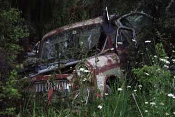

03 November 2004
About time I wrote another one of these. As usual it takes me ages to complete them. This one must be a new record in procrastination!
Once again, here are some of the main sections of this travelogue for your convenience.
Clothes? We don't need no stinking clothes...
Partly our trip was last minute because we booked it through
lastminute.com
. (As you do)
The other reason our trip was incredibly last minute is due to the way
the Greece Embassy issue visas to visitor. They only issue 25 visas a day
during the peak season. And to get one of those visas, Yey had to queue up at
2:00am outside the embassy. Luckily only 18 other people were in front of her
that morning, so she managed to get a visa. But the only problem is, it
wouldn't be ready until our day of travel. So we had an amusing episode where
our tickets only just arrived (by courier) an hour before our fight almost the
same time that Liezl made it out to Heathrow from central London.
Fortunately we made the flight. As final call for boarding actually meant you'll
be standing around in a queue for a flight that is going to take ages yet so
don't bother rushing...
On arrival to Athens we decided on pot luck for the hotel. We were only staying
the night as we were going to catch a ferry to Naxos island the next day. So we
took the first sh*t-hole we could find. Not the smartest of moves, and it's the
worst 'hotel' I've ever stayed in (outside of London). But it was a place to
sleep which was the main point.
That night we just wandered around the many restaurants close to the Plaka area. The Acropolis was floodlit above us on the hill (our target for tomorrow afternoon). Dinner was Souvlaki and Mousaka at 1am washed down with some Sangria. Not having drunk Sangria before I hadn't realised how completely it could ruin a nice red wine. It now beats Mulled wine on my list of things I don't like to do with red wine. Blaargh!
Next day, it was up at the crack of lunch (early for us, because we want to make the most of the day). Cold, but refreshing shower in the communal bathroom, then off to explore. Crepes and Omelette for lunch (yummy) as we wandered our way gradually up to the Acropolis. We took a few wrong turns, but that to me is some of the fun of travelling. Who cares if it's not very efficient. At least this way, going unprepared, you have low expectations. And the little magic you do discover is a really pleasant surprise.
Tickets for the Acropolis are £12 quid each. But they cover most of the major attractions in Athens, so it's worth it. I got told off for touching some of the stone as we wandered into the main plateau. (Naughty naughty...) And one thing that really surprised me was how few people there were up there. I'd expected the place to be mobbed. But we were able to take photos without anyone else in them. (There were maybe 20-30 people up the top with us)
We wandered back to our hotel via the Pathenon then grabbed our bags and took the metro to Piraeus port. The Athens metro is pretty wicked. You pay 90c for 1 and a half hours of travel valid anywhere on the metro. Shame it's not possible to have something similar in London. :-)
We made the 5pm fast ferry to Naxos with literally seconds to spare (keeping in theme with our last-minute title to the holiday). Taking 3 hours to get to Naxos with a stop at Paros island. Liezl surprised me with a singing Christmas card. (ala Marilyn Monroe - happy birthday song) I was embarrassed to open it as it was so loud and ended up sitting on it so I could make it (slightly) quieter.
At Naxos we were met my Liezl's Mother and Sister-in-law. They took us up through the windy narrow paths of the Chora to our hotel, the Chateau Zevgoli. I have to say the next week and a bit was nothing more that eating delicious food (with a focus on gyros and fresh seafood), relaxing on the beach enjoying the afternoon sun and sea with some other Greek families (we tended to go to the beach after most the tourists had left... which was around 5-6pm. Still really nice, but not absolutely baking), drinking Mythos beer and having chocolate-covered crepes in the early hours of the morning. Ahhhhh... that's the life.
Here I am standing in the (unfinished) Temple of Apollo
Our favourite restaurant is in the back streets of the Chora called Manoli's Garden Taverna. It's run by Manoli & Viviane (who is an English and Greek teacher). Great atmosphere with it's decorations of fishing nets and the food was easily the best that we'd eaten in Naxos. I can't begin to do it justice, but Bill Tippett is a little more eloquent .
We booked a car for one day so we could explore a bit of the island. We saw a lot, but the highlights for me were the huge statue of Kouros (there are several on the island), the white mountain 'city' of Apiranthos (where we still managed to get a wonderful lunch of delicious fresh seafood) and all of the small towns we wandered through we just fantastic. In the evening we went to Plaka beach for a bit of a dip before returning the rental car.
I guess the other highlights of our trip were: Skinning dipping at Plaka beach during sunset, an evening concert of traditional Greek music (with lots of wine), watching the sunsets and later the shooting stars at night, getting some solid reading time in (I think I went through a few kilos of books), the delicious gyros that were a staple of our diet, the Ayrton Senna wannabees who drive the bus from Agios Anna and Agios Prokopious (the nice beaches) back to Old Chora town...(v.fast), my massage given to me by a large Russian man called Alexi/Alexandros and finally the complete lack of rain throughout our stay on Naxos.
Back in Athens we hunted down a traditional family mezze-type restaurant that we'd spotted on our arrival. But sadly we had to return to the UK after having such a wonderful trip. (It's always the way...)
Not having been to a football match yet, when I was invited to a Manchester vs. Fulham game at Old Trafford in November I was dead keen going. The atmosphere was unreal. Totally unlike Kiwi rugby matches. Brits have a chant or song for almost everything and they are incredibly vocal. Beats the pants out of "All Blacks! <clap-clap-clap> All Blacks!...". Why can't we have some proper songs too, huh?
Unfortunately it was Manchester's first home defeat that season, which put a damper on things. A month later I was invited to an International friendly England vs. Denmark, also at Old Trafford. The Danes have this odd swaying motion they do while cheering on their players. Looks very strange, but whatever it was it worked as the Danish team won.
None other than Mister Posh Spice at the England vs. Denmark friendly
After the game, huge crowds waited outside for a glimpse of the players as they filed onto the bus to leave the stadium. I was deemed an unlucky mascot, having been to two losing games in a row, and I'm not invited back any more. :-)
After a couple of years away, I finally made it back home for a visit. For one thing, it was nice to escape the great British winter. But mostly it was great to be back home. Having been away for so many years has really made me appreciate how good we Kiwis have it.
One of our first stops was somewhere nice to eat. So we headed down to Auckland's viaduct harbour and marina, which was recently (circa 2000) given a major facelift in preparation for the America's Cup . The whole area is really impressive now. There's a great selection of restaurants and bars to choose from.
We ended up picking a fish restaurant called Kermadec. I was absolutely blown away by the food. Sure it was a little pricey, but I can't remember eating such fresh delicious fish before. (I'm sure I have, but after living in the UK for so long, I've forgotten what fresh fish tastes like)
In fact, our whole trip seemed to have an emphasis on food. I'm not saying there aren't good restaurants in the UK, but I really notice the difference every time I travel anywhere. I've yet to travel to a country that doesn't consistently have better food than the average English fare.
The other main point of our trip, was to catch up with Rallies and mates. Liezl said she felt like she was in a 2-week race to see as many people as possible. I guess it was a bit of overkill. I don't think we got to see more than two thirds of the people on my list.
The Brotherhood of Beer
After spending a week in and around Auckland, it was time to take a trip up north to visit Mum. We rented a car from Ellerslie (cheap but good) and blasted off on our drive. Unfortunately the weather turned pretty crap on us, as we were hoping to spend a bit of time on the beach.
Manganui Fish shop - World famous in New Zealand
Instead we decided to focus on food once again. Went to the best fish and chip shop, the world famous (in New Zealand) Manganui Fish Shop. Ordered a couple of pieces of freshly caught fish (you buy it by weight, and they batter and cook it after you buy it), a scrummy prawn/mussel salad and a couple of cans of Speights (It's a hard road finding the perfect woman, but my girl likes a can of Speights, so that's okay). The fish was so scrummy that I had to have another piece as well. (Honestly, it's really hard to find good fish and chips in Gloucestershire)

Greg's old Ford Prefect. The car I first learned to drive at age 11.
After spending our few days up north at Mum's, we turned around and drove straight through to Wellington. (I think we stopped in Auckland for a couple of hours) What distance is that? 900kms? 1000? Whatever.. it was a decent trek. I think we arrived in Wellington in the wee hours of the morning (something like 1:30am). Since we were hungry, our first stop was Courtenay place. We tried one of the Turkish Kebab places. Liezl was blown away that not only was it a really nice sit-down type of place (almost restaurant-like), but they also served alcohol. That is something that is just unheard of here in the UK.
Just a couple of wines before tucking into the Barbie
Again Wellington proved you can't beat it on a good day. But it also showed that when the weather turns crap... It's really crap! (Unless you are a wind-surfer of course) We had one really gorgeous day, which we spent at the beach/swimming pool followed up by a delicious barbeque at Roy & Fiona's
On the way back to Auckland we had a good laugh at the road signs. It seems that every few miles we'd see another street name that meant something rude or funny in Tagalog. Tanga Road, Titi street and Puke Puke road were three of the best. (Tanga just means stupid, but Titi and Puke are male and female reproductive organs respectively)
Funny if you are English-speaking, hilarious if you speak Tagalog.
Something people over here, in the UK, are always surprised about is that I've never been to Australia. I think it's because the rest of Europe is so close and it's so easy to visit, that it is probably the same for Kiwis and Aussies to visit each other's countries. That's probably true in a way, but I've just never made it over to Australia before now. Our flight back to the UK went via Sydney, so it was my first look at the city (albeit from the air). The place looks gorgeous.
We almost spent the night there. For whatever reason our flight was delayed until the airport closing time. And if we had of not been able to take off before midnight, then apparently we would have to wait until the next day. So Liezl and I considered stalling the boarding procedure just long enough so we'd have to lay-over. But in the end, I guess reality set in, and we meekly boarded the aircraft without causing an incident. I think we took off with something like 2 or 3 minutes to spare. (So close!)
I guess we could have arranged a stop-over if we were really keen, but it's such a hassle to get visas when you hold a Philippines passport.
It was a choice of kissing me or the pig...
Once again Christmas seemed to sneak up bloody quickly (as it does). There are the usual round of parties and stuff. (All tons of fun of course) But the freezing weather and almost non-existent sunlight really made me miss New Zealand. (I'm sure Christmas is meant to involve outdoor barbeques, swimming and the beach...)
Aaron... The happiest baby in the world (constantly)
We had a nice little Christmas party at a friend's place (about 20 of us I think). But to be honest, most of it went in a blur. I was still recovering from our trip to NZ.
At the start of 2004, straight after New Years, eight of us from Kraft went on a snowboarding trip to La Plagne in France. It'd been a couple of years since my last trip, so I was really looking forward to this one.
Lad's trips are great, but there is something special about lad's snowboarding trips. Where else do you learn how to play Shithead (a card game that's eerily familiar to last-card... just more rules, and being drunk and abusive is almost a pre-requisite)
We had great weather there. But I still think that nothing beats North American ski-fields. The snow was pretty icy/crusty in places, which I don't find that enjoyable while boarding. That said, I didn't really come a cropper any time during the seven days of boarding. (I did have to take a day off to recover, but that's probably more fitness related than anything... I wasn't feeling all that brilliant)
Pete was pretty unlucky. He'd been barrelling around on his skates (the only non-boarder in the group) and managed to bust his ankle in a couple of places. There was a bit of confusion with the tour rep too. He kept telling us that Pete would be coming back even though there was no possibility of that happening. We didn't realise Pete was stuck in a French hospital, without his cell-phone and with only one book (that he'd already finished). Each afternoon the rep kept saying 'Pete will be back tomorrow', so it wasn't until the third day that we realised our rep was spinning us a line of crap. We all hired a van and driver to take us into the town where Pete was in hospital. He ended up flying out a few days after us. (Don't think his wife was very impressed when he got home)
The last day was brilliant. It dumped the night before, so we had a lovely sprinkling of powder that made the whole trip just that much better. Funniest event of the day was one of the bloke going off-piste and getting completely stuck in a sink-hole... Took him half an hour to dig his way out to where I was waiting (by which time I was completely frozen). Well... it was funny afterwards.
Sat the little devil, managed to convince Rachel to marry him (no idea how), so what better excuse for a Stag weekend. So up to Edinburgh for some Quad-bike riding, some clay pigeon shooting, and a lot of drinking. On the first night I got a little too drunk and ended up painting the toilets in the Opal lounge some weird colour. I must have walked straight out of the club without saying goodbye to any of the lads... Problem was, after an hour or so of wandering around Edinburgh trying to clear my head, I found I had no idea where I was staying.
Eight policemen and more than a few helpful taxi drivers later, I finally managed to figure out where my bed was... The next morning I was pretty badly hung-over... Fine form for the biking and shooting to come.
Quad biking was a hoot. Managed to get completely covered in mud (what's the point otherwise). And even in the state I was, I seemed to do pretty well at the shooting (couldn't hit the rabbit one to save myself though). Sat looked overly comfortable with the shotgun though, managing to hit pretty much every clay. (bloody naturals!)
Saturday night was a little mellower in comparison. (better pacing on my part) The highlight of the night was not going to a strip-club with the bulk of the lads, but wandering to a reasonably nice bar with Vinnie and Bob, just chilling out for most of the evening before nipping off to some underground nightclub (Medina?? Can't remember). We saw a nice fight while waiting for a taxi to take us home. But even that wasn't vicious... Edinburgh is a great night out.
Everyone else buggered off on Sunday, but I hung around to catch up with John Harrison (ex-Air Force comrade) who'd just moved up there that day. My flight was the next morning back to Birmingham, then a quick drive and get back into work... :-)
Whew...
Next travelogue's got our trip to America in it. (assuming I ever get around to finishing the thing)
Laters...